Root n’arrive pas à se débarrasser d’une question.
Sur quoi Lucy travaille-t-elle réellement avec Clive ?
Elle comprend parfaitement pourquoi la présence de Lucy au Mexique peut être liée à Betty et à la tentative d’enlèvement d’Anna.
Mais Clive ?
Lucy ne fait jamais rien au hasard.
Et elle sait parfaitement que Clive Lynx est l’un des cambrioleurs les plus recherchés des États-Unis.
Si elle accepte de travailler avec lui, c’est que l’affaire doit être particulièrement complexe.
Peut-être même officieuse.
Root repense également à sa tentative d’intrusion à l’hacienda Awake.
Qu’était-il venu chercher exactement ?
Des informations sur Hope ?
Une faille dans son système de sécurité ?
Ou simplement la preuve qu’elle pouvait représenter un danger pour Anna ?
Root décide finalement de contacter Lucy.
Un verre.
Tous les trois.
Juste pour discuter.
Et, avec un peu de chance, comprendre ce qu’ils préparent.
Lucy accepte volontiers.
Clive, lui, pose une condition :
Hope doit être présente.
Et il choisit le bar.
Root accepte presque immédiatement, amusée par son attitude.
Lorsqu’elle raconte l’histoire à Hope, celle-ci sourit.
— Il veut m’observer.
— Très certainement.
— Et toi, tu veux les faire parler.
Root prend un air innocent.
— Moi ?
Hope rit.
— Ne vole pas trop vite les secrets du voleur.
Root sourit.
— Aucune promesse.
Root retrouve Lucy et Clive près du parc Santa Lucía.
Hope les rejoindra une heure plus tard.
Depuis près d’une heure, ils parlent de tout.
Sauf de ce qui intéresse réellement Root.
Clive raconte plusieurs anecdotes.
Lucy questionne beaucoup Root au sujet de Hope.
Et Root répond juste assez pour ne pas réellement répondre.
— Il y a une chose que je ne comprends pas, finit par dire Lucy.
— Seulement une ?
— Pour l’instant.
Lucy poursuit :
— Comment Hope a-t-elle pu vivre aussi longtemps coupée du monde sans chercher à retrouver son frère ?
Root réfléchit.
— Parce qu’Hope ne pense pas comme nous.
Puis Root retourne la conversation.
— Mais parlons plutôt de vous deux.
Vous n’êtes quand même pas venus jusqu’au Mexique pour prendre des vacances ensemble.
Clive semble presque offensé.
— Pourquoi pas ?
— Parce que Lucy ne partirait jamais en vacances avec toi.
— Charmant.
Root finit par pousser Lucy dans ses retranchements.
— À moins que…
— Que quoi ?
— Tu ne me fasses toujours pas confiance.
Lucy hésite.
Puis elle finit par céder.
— Nous enquêtons sur la Tueuse Caméléon.
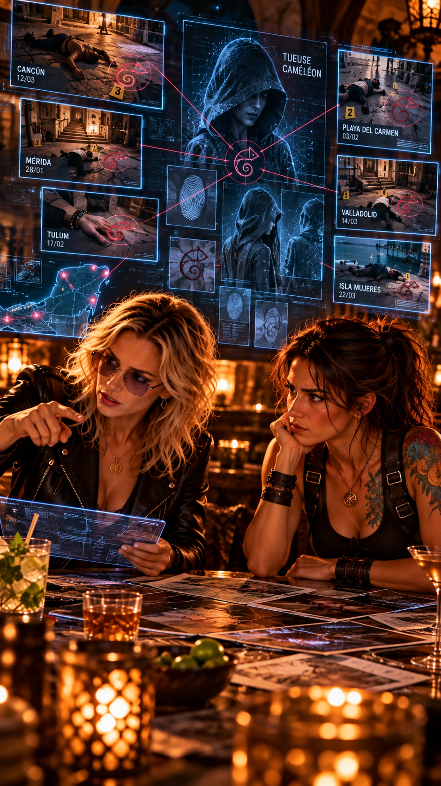
L’enquête officielle considère la Caméléon comme une tueuse en série.
Lucy, elle, n’y croit pas.
Les victimes n’ont aucun profil commun.
Aucun même milieu.
Aucun même pays.
Aucune méthode de mise à mort identique.
Mais quelque chose revient systématiquement.
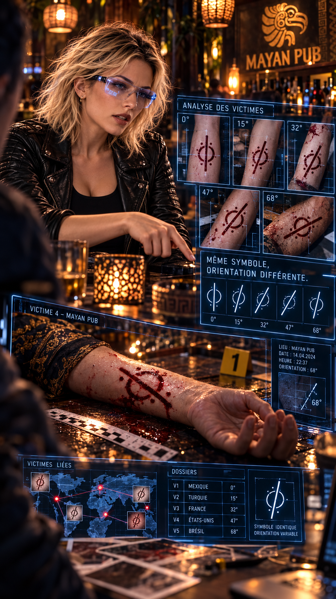
Sur chaque victime apparaît le même symbole.
Mais son inclinaison change.
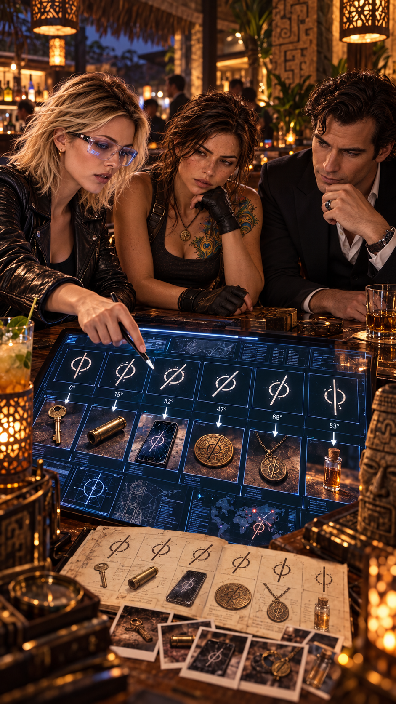
Lucy dessine avec son doigt sur la table.
— En prolongeant mentalement l’orientation du symbole…
Root comprend.
— Ça pointe vers un endroit précis.
— Exactement.
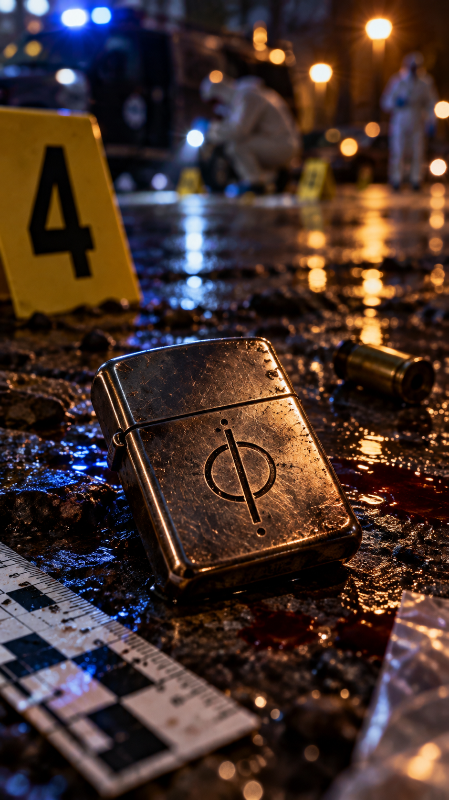
Sur chaque scène, la ligne désignait un objet.
Un objet banal.
Placé là comme si rien ne le distinguait du reste.
Sur ces objets, Lucy a retrouvé un message.
Presque invisible.
Microscopique.
Certains métiers ne deviennent des arts qu’entre des mains d’exception.
Celui-ci appartient à une femme qui sait descendre dans les abysses de l’être humain sans s’y perdre.
Celui qui veut comprendre l’artiste devra accepter de suivre longtemps un chemin sans certitude.
Peut-être alors aura-t-il une chance de comprendre ce qu’il regarde.
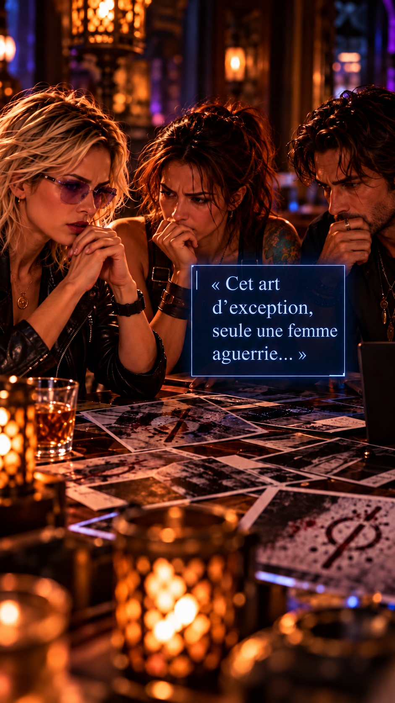
Lucy connaît le texte par cœur.
Elle le récite lentement.
Chaque mot semble avoir été choisi.
Chaque formulation, construite pour provoquer une réaction précise.
Root réfléchit.
— Je comprends pourquoi tu penses qu’il s’agit d’une femme.
Et elle se définit clairement comme une professionnelle.
Lucy acquiesce.
Hope arrive précisément à cet instant.
— Bonsoir.
Root tourne la tête.
— Tu arrives au bon moment.
Clive lui adresse un sourire.
— Merci d’avoir accepté mon invitation indirecte.
Hope s’assoit.
— J’étais curieuse de voir pourquoi vous teniez autant à ma présence.
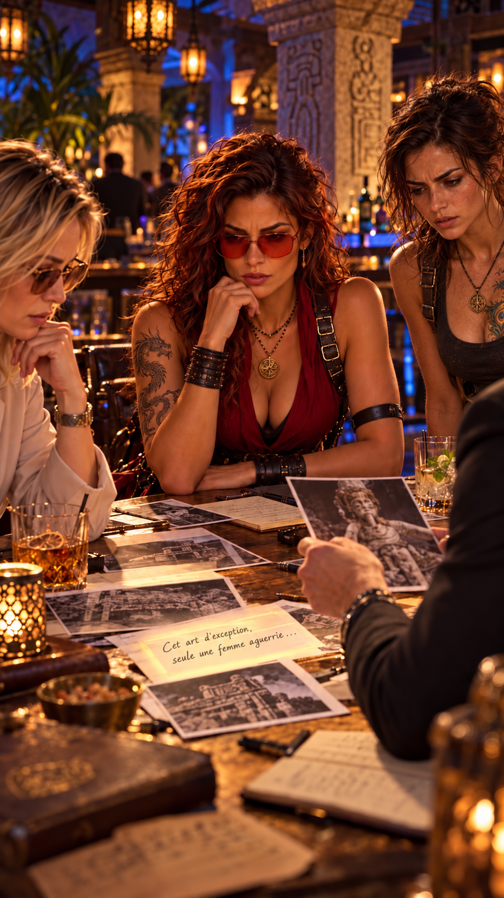
Hope écoute le message sans interrompre Lucy.
Puis elle intervient.
— Ou elle veut que vous la perceviez ainsi.
Lucy la regarde.
— Vous pensez qu’elle ment ?
— Je pense qu’une personne qui construit un message aussi soigneusement construit aussi l’image qu’elle veut donner d’elle-même.
Puis Lucy révèle la partie la plus troublante de son enquête.
IA2 a découvert une corrélation géographique.
Pour chaque meurtre qu’elle a pu dater précisément, Root se trouvait dans le même pays.
Parfois dans la même région.
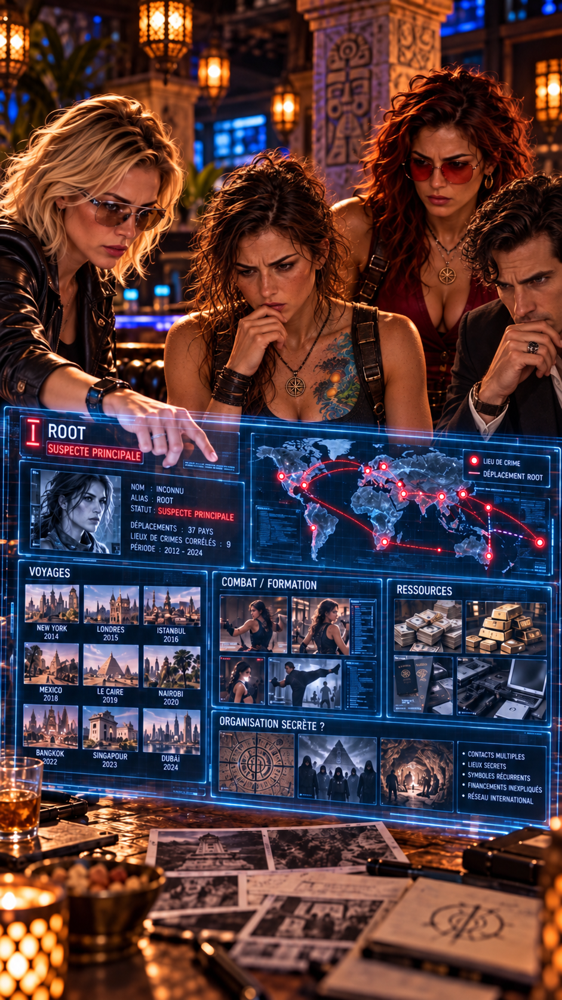
Root cesse de sourire.
— D’accord.
Un rire nerveux lui échappe.
— Là, je comprends beaucoup mieux.
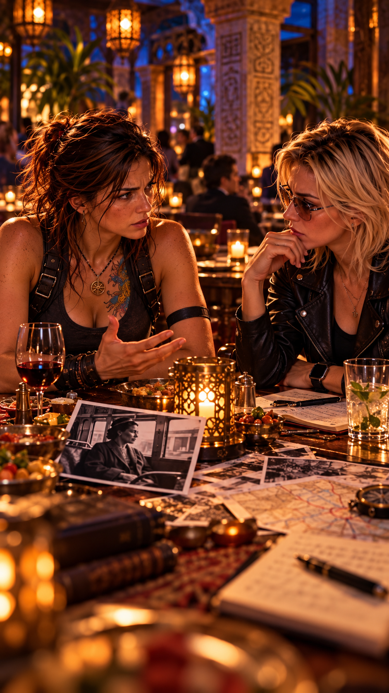
Lucy expose les éléments.
Root voyage énormément.
Elle sait se battre à un niveau extrêmement élevé.
Elle dispose de moyens technologiques et financiers importants.
Elle appartient à une organisation secrète.
Et elle réfléchit constamment en termes de causes, de conséquences et de trajectoires humaines.
Lucy repense également à leur dîner.
Rosa Parks.
Les événements minuscules capables de modifier l’histoire.
Les conséquences invisibles au moment où une décision est prise.
Root comprend parfaitement.
— Donc, dans l’hypothèse où quelqu’un voudrait supprimer une personne pour modifier une chaîne d’événements futurs…
Lucy ne répond pas.
Root termine elle-même :
— Je pourrais correspondre.
— Oui.
Root sourit légèrement.
— Tu sais ce qui est inquiétant ?
Je trouve ton raisonnement plutôt bon.
Puis Root ajoute :
— Ton suspect est beaucoup trop parfait.
Lucy sourit.
— C’est exactement ce qui me dérange.
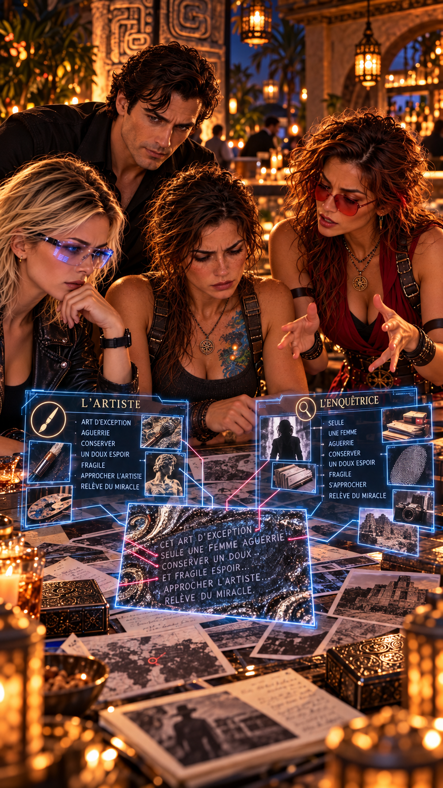
Lucy finit par reconnaître que Root reste sa suspecte principale.
Root se renverse dans son fauteuil.
— Génial.
Puis elle lève son verre.
— À la confiance.
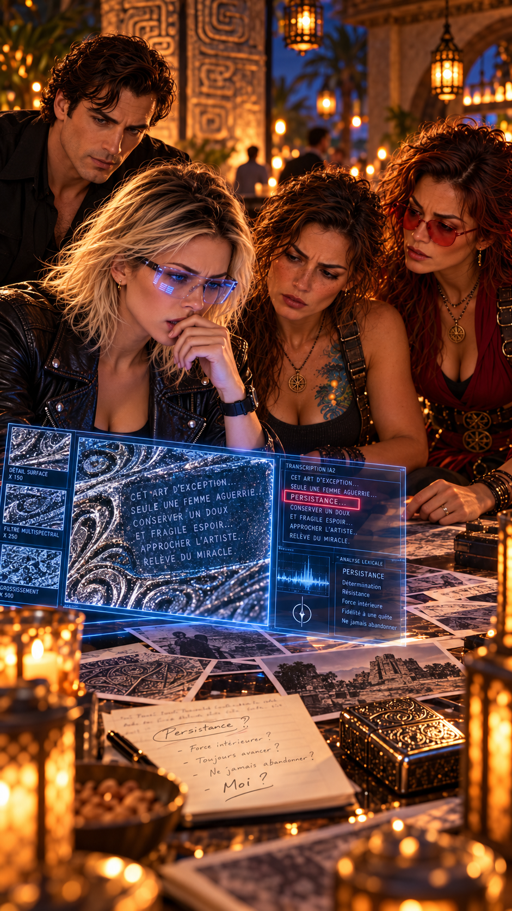
Hope reste silencieuse quelques secondes.
— Ton raisonnement est parfaitement plausible.
Lucy attend.
— Mais tu commets une erreur.
— Laquelle ?
— Tu regardes exactement dans la direction que la Caméléon veut que tu regardes.

Hope reprend certains mots.
« Un fragile espoir. »
« Une persistance vaine. »
« Être guidé sur le chemin de la vérité… »
Puis elle regarde Lucy.
— Là, elle ne parle plus d’elle.
— Elle parle de l’enquêteur.
— De toi.
Hope s’attarde ensuite sur un mot.
« Miraculeusement. »
Pourquoi faudrait-il un miracle pour approcher l’artiste ?
Parce qu’elle estime qu’on ne peut normalement pas la trouver.
Hope ajoute :
— Ton Caméléon est peut-être un fantôme administratif.
Pas d’identité exploitable.
Pas de parcours permettant à IA2 de créer les corrélations habituelles.
Quelqu’un qui sait exactement ce que les outils de Lucy peuvent voir.
Et surtout, ce qu’ils ne peuvent pas voir.
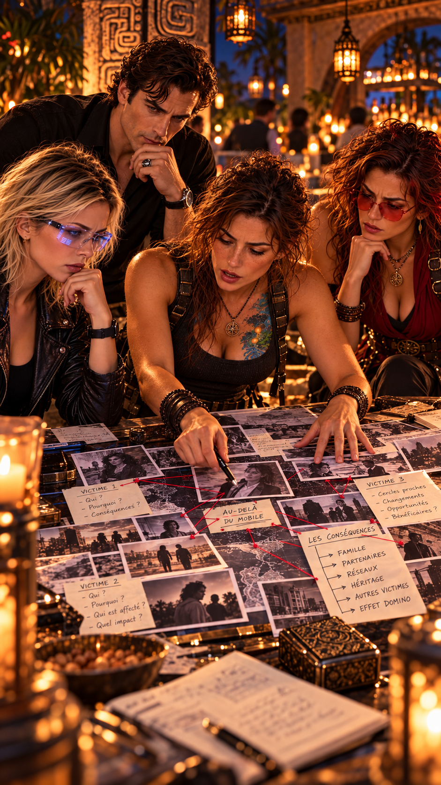
Root se penche sur la table.
— Et il y a autre chose que nous ne regardons probablement pas assez.
— Les victimes.
— Exactement.
Pourquoi ces personnes ?
Qu’est-ce qui a changé après leur mort ?
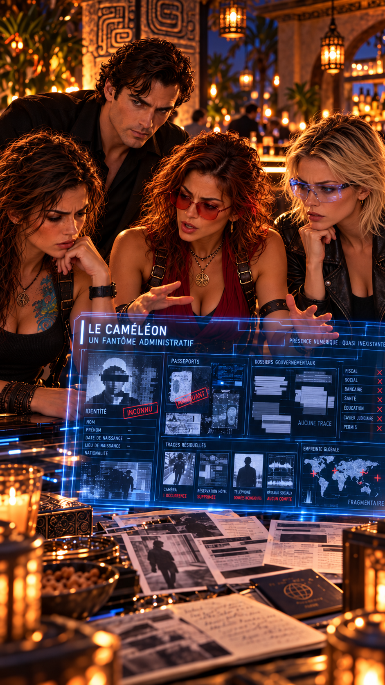
Hope pousse le raisonnement plus loin.
— IA2 ne devrait pas seulement étudier les effets de leurs morts.
Lucy fronce les sourcils.
— Mais quoi ?
— Leur absence.
Prenez chacune des victimes.
Puis posez cette question :
Que se serait-il passé si cette personne était encore vivante aujourd’hui ?
Quelle décision aurait-elle pu prendre ?
Qui aurait-elle pu rencontrer ?
Quelle découverte aurait-elle pu faire ?
Quelle personne aurait-elle pu sauver ou condamner ?
IA2 cesse de considérer la victime comme un dossier fermé.
Elle reconstruit désormais les relations, décisions, rencontres et projets qui auraient pu exister.
L’enquête change de direction.
Lucy et IA2 reconstruiront les victimes.
Clive cherchera les identités effacées, les disparus, ceux qui n’existent plus officiellement.
Root cherchera les causes et les conséquences.
Hope, elle, regardera là où la Caméléon espère que personne ne regarde.
Une équipe parfaitement normale.
Soudain, Hope cesse de sourire.
Son regard change.
Elle observe les tables.
Les entrées.
Les passants.
— Il y a trop de monde ici.
Hope se lève.
— On part.
— Pourquoi ?
Hope saisit sa veste.
— Maintenant.
Root ne pose aucune question.
À peine ont-ils parcouru quelques mètres…
— Attention ! lance Root.
Elle attrape Lucy par le bras et la tire violemment vers elle.
Au même instant, un homme surgit dans son dos.
Hope projette brutalement Clive contre un mur.
— Hé !
Une lame passe précisément à l’endroit où se trouvait sa gorge une fraction de seconde auparavant.
Clive regarde l’arme.
— D’accord. Retire ce que j’allais dire.
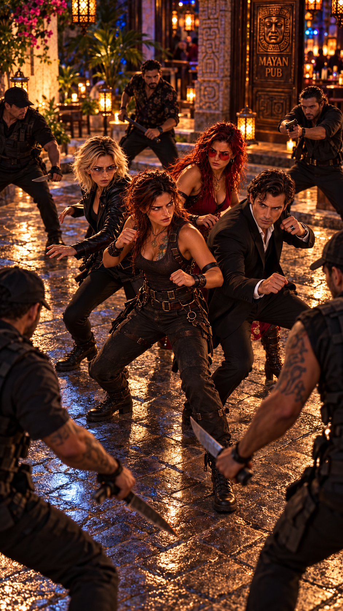
Six individus apparaissent presque simultanément.
Ils ne parlent pas.
Ils se positionnent.
Chaque mouvement semble préparer le suivant.
L’affrontement éclate.
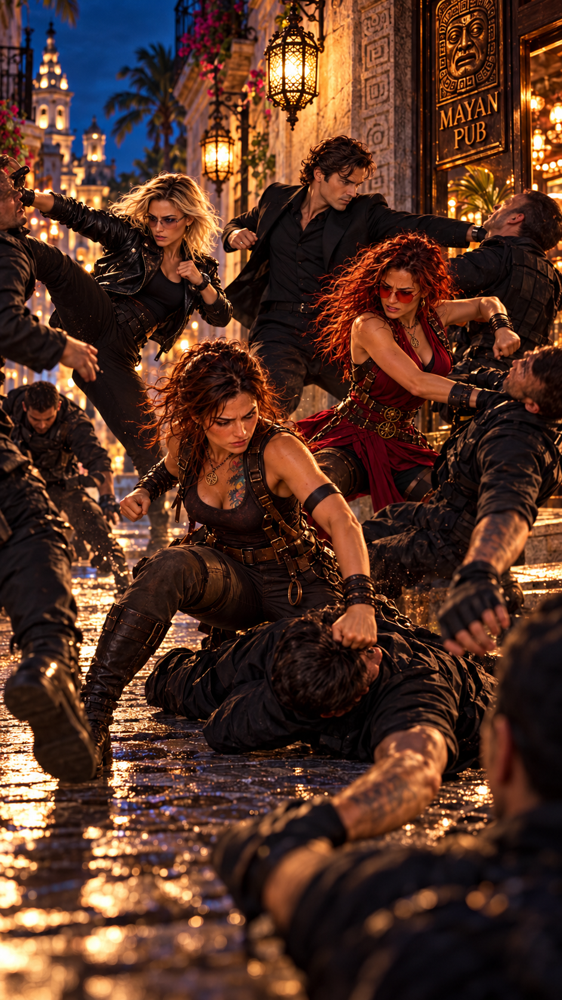
Root et Hope réagissent immédiatement.
Lucy tente de participer.
Mais elle comprend rapidement que leurs adversaires ne sont pas de simples agresseurs de rue.
Ils se déplacent en coordination.
Sans paroles inutiles.
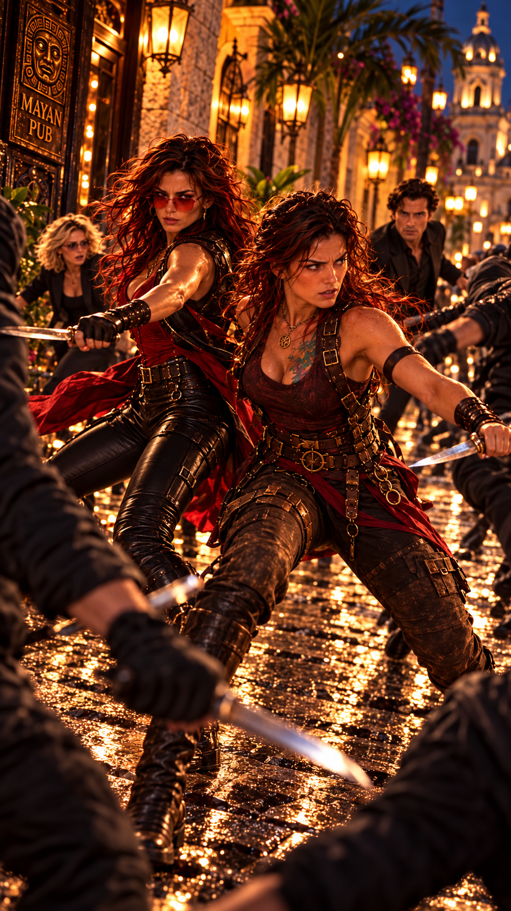
Root neutralise un premier homme.
Hope en désarme un second.
Leurs mouvements se complètent sans même qu’elles aient besoin de se parler.
Clive évite de justesse un coup et récupère l’arme abandonnée.
— Je vous rappelle que moi, normalement, je vole des tableaux !
Lucy esquive une attaque.
— Adapte-toi !
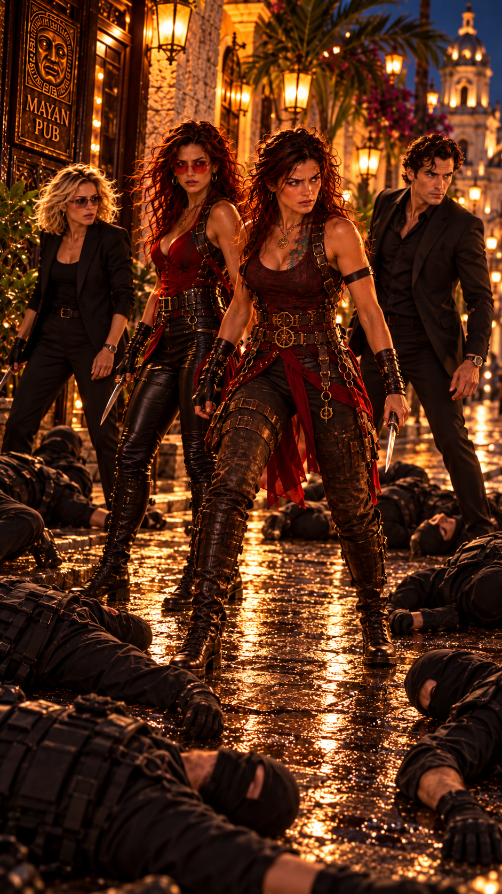
Quelques instants plus tard, les six assaillants sont au sol.
Vivants.
Mais incapables de poursuivre le combat.
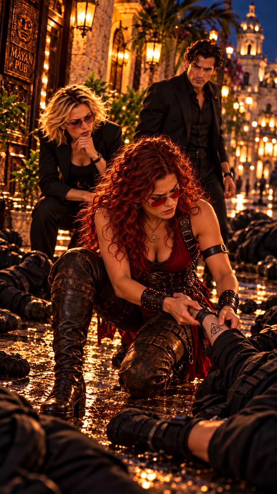
Hope s’accroupit.
Elle saisit le poignet droit du premier.
Puis du deuxième.
Du troisième.
Au quatrième, son expression change.
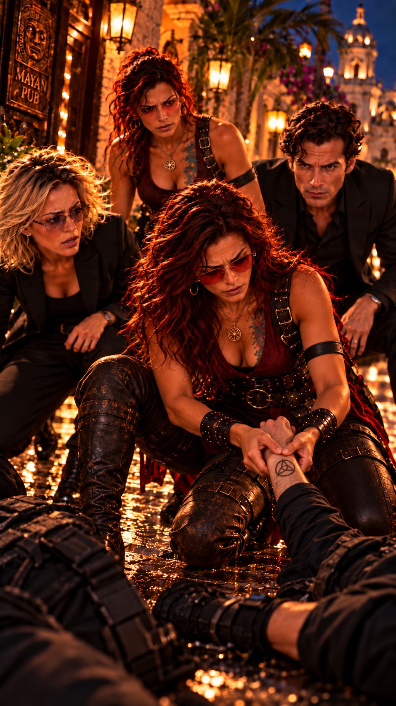
Root s’approche.
— Qu’est-ce qu’il y a ?
Hope se redresse.
— Ce ne sont pas des mercenaires.
Lucy reprend son souffle.
— Alors quoi ?
Des Gardiens Noirs.
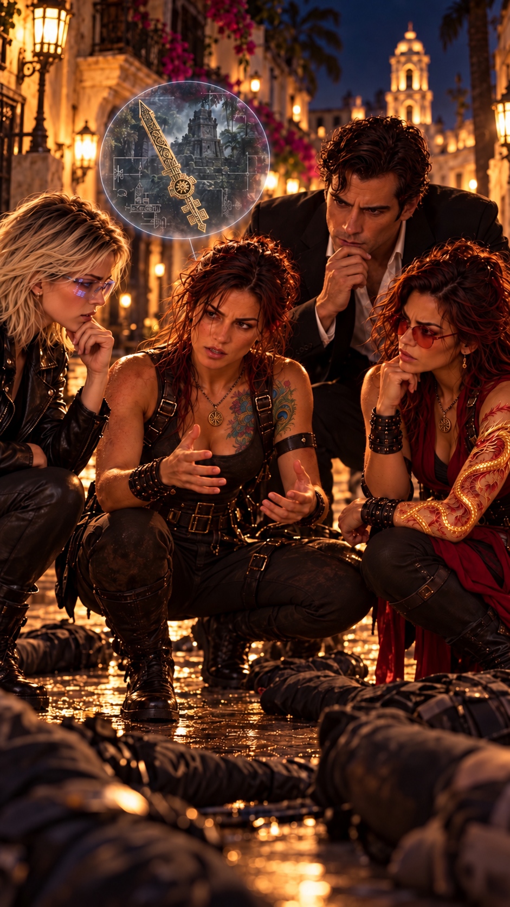
Hope regarde Root.
— Lorsque tu étais au Vietnam…
À part ce que je t’avais demandé de retrouver…
Tu n’aurais rien découvert d’autre ?
Root hésite.
— Si.
— Quoi ?
— Une sorte de lame.
Enfin… elle ressemble davantage à une clé qu’à un couteau.
Une pièce ancienne.
Une forme de lame.
Mais sa géométrie évoque davantage un mécanisme qu’une arme.
Une clé.
Hope devient immédiatement plus grave.
— Où est-elle ?
— En sécurité.
— Et personne ne sait que tu l’as trouvée ?
— Personne à qui je l’ai dit.
Hope regarde les hommes au sol.
— Alors quelqu’un t’a suivie suffisamment longtemps pour comprendre que tu avais découvert quelque chose.
Root demande :
— Qu’est-ce que cette clé ouvre ?
— Quelque chose que les Gardiens Noirs ne doivent surtout pas ouvrir.
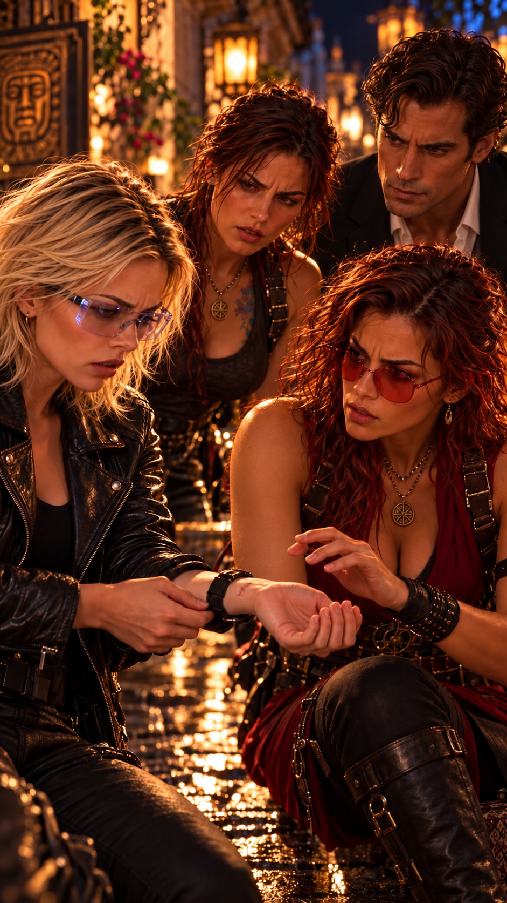
Puis Hope aperçoit quelque chose sur le poignet de Lucy.
Son regard se fixe.
Lucy le remarque.
— Quoi ?
Hope s’approche.
— Donne-moi ton bras.
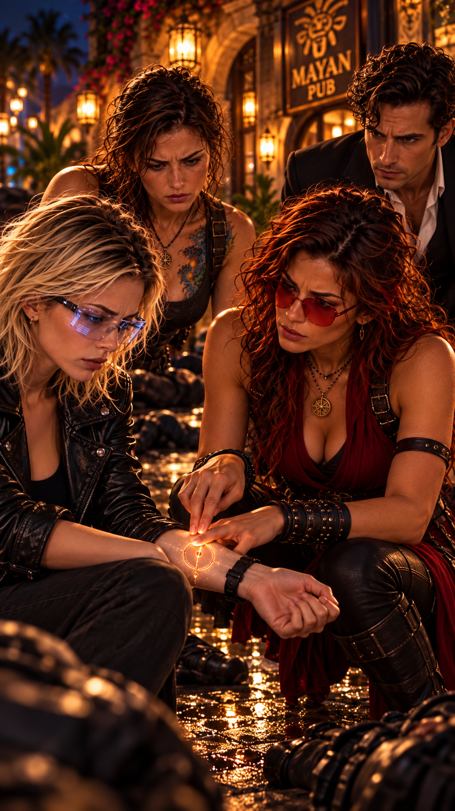
Lucy recule instinctivement.
— Certainement pas.
— Lucy.
— Pourquoi ?
Hope regarde Root.
— Parce que je crois que je viens de comprendre quelque chose.
— À propos de quoi ?
— De toi.
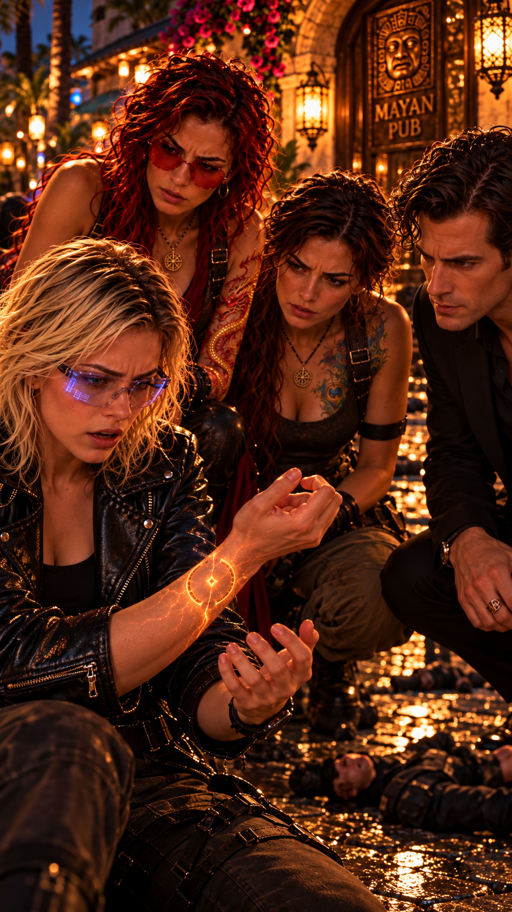
Lucy observe son propre poignet.
— Je n’ai jamais eu de tatouage.
— Ce n’en est pas un.
La marque reste visible quelques instants.
Puis commence à s’effacer.
Lucy relève les yeux.
— Alors ?
Je suis quoi ?
Hope hésite.
Puis répond :
Les Indécis.
Lucy éclate presque de rire.
— Vous êtes sérieuses ?
— Complètement.
Tu portes leur marque.
Tu n’es liée par naissance ni aux Sentinelles de la Lumière, ni aux Gardiens Noirs.
— Donc je dois choisir un camp ?
— Non.
Hope insiste :
— Tu peux ne jamais en choisir.
Tu peux leur faire confiance.
Les combattre tous les deux.
Ou suivre ton propre chemin.
Influencer n’est pas décider.
Le destin peut placer certains croisements devant nous.
Mais c’est encore nous qui choisissons dans quelle direction marcher.
Lucy reprend son enquête.
Clive photographie les assaillants.
IA2 commence à renvoyer les premières correspondances.
DÉCÉDÉ
Premier individu : mort officiellement il y a six ans.
Deuxième : mort il y a presque neuf ans.
Accidents. Noyade. Chute.
Pourtant, ils viennent de combattre Lucy, Root, Hope et Clive.
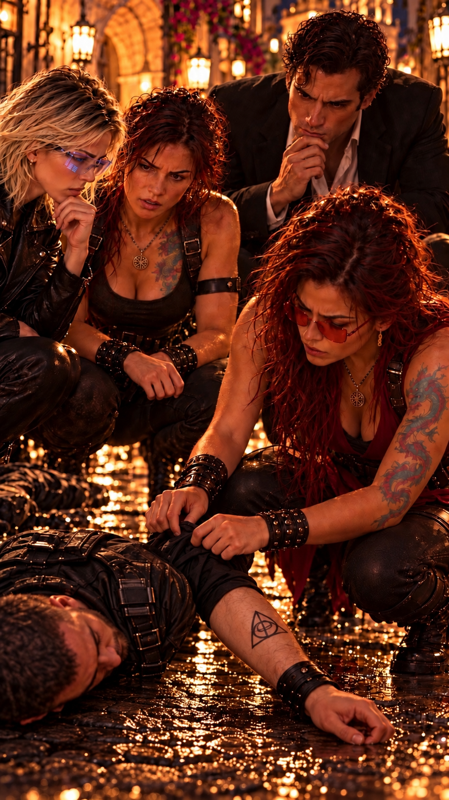
Lucy exige une preuve de l’existence des Gardiens Noirs.
Hope s’accroupit auprès de l’un des hommes inconscients.
Elle remonte sa manche.
Puis pose sa main contre l’intérieur de son poignet.
Une ligne sombre apparaît sous la peau.
Puis plusieurs symboles.
Un cercle irrégulier traversé de lignes profondes.
La marque des Gardiens Noirs.
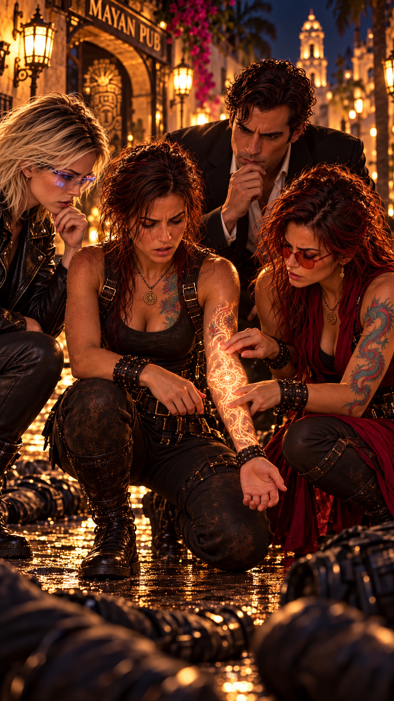
Lucy veut maintenant une preuve concernant les Sentinelles.
Hope regarde Root.
Root pose une main sur son épaule.
— Vas-y.
Hope attrape doucement le poignet gauche de Root.
Le symbole des Sentinelles apparaît.
Puis il continue de se développer.
D’autres lignes remontent le long de son avant-bras.
Root appartient à une lignée ancienne.
Puis quelque chose apparaît sur la peau de Hope.
Un éclat multicolore au niveau de l’épaule.
La lumière se propage.
Comme un feu vivant glissant sous la peau.
En quelques secondes, un immense dragon se dessine sur le corps de Hope.
Il traverse son buste, son ventre, son dos et ses bras.
Ses teintes irisées semblent bouger.
On dirait qu’il respire.
Qu’il frissonne.
Qu’il vit.
Lucy regarde une dernière fois son poignet.
La marque a disparu.
Pourtant, elle sait désormais qu’elle est là.
Et l’enquête sur la Caméléon vient de devenir beaucoup plus personnelle.
Hope révèle également connaître une femme susceptible de correspondre au profil de la Caméléon.
Une femme extrêmement entraînée.
Patiente.
Capable de disparaître.
Et suffisamment sûre d’elle pour transformer une traque en jeu.
Mais Hope refuse encore de donner un nom.
Ce n’est qu’une hypothèse.
Pas une preuve.
Puis son attention revient aux Gardiens Noirs.
Ils reviendront récupérer leurs hommes.
Il faut partir.
Lucy et Clive prennent la direction de l’hacienda Flores pour rejoindre Betty et Anna.
Hope et Root, elles, filent vers le musée Tempass.
Une seule priorité :
comprendre la clé…
et la rendre inaccessible à quiconque voudrait s’en servir.
Lucy voulait savoir qui était la Caméléon.
Mais une autre question venait désormais de s’imposer.
Pourquoi la Caméléon chercherait-elle Lucy Adverse ?
Hope regarde Root une dernière fois.
— Ce n’est que le début.